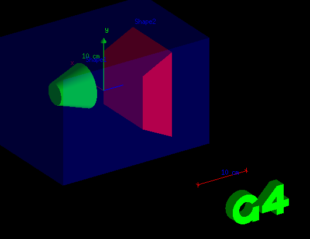

Simulations¶
That has a paragraph about a main subject and is set when the ‘=’ is at least the same length of the title itself.
ROOT-Data Analysis Framework¶
Root is a modular scientific software toolkit.It provides all the functionalities needed to deal with big data processing,statistical analysis,visualisation and storage.It is mainly written in C++ but integrated with other lanuages such as Python and R.
Installing the Root¶
Build Prerequisites This page lists the Prerequisites packages that need to be install on the Ubuntu systems where you can use the following commands.
Required packages:
sudo apt-get install git dpkg-dev cmake g++ gcc binutils libx11-dev libxpm-dev libxft-dev libxext-dev
Optional packages:
sudo apt-get install gfortran libss1-dev libpcre3-dev xlibmesa-glu-dev libglew1.5-dev libftg1-dev libmysqlclient-dev libfftw3-dev libcfitsio-dev graphviz-dev libavahi-compat-libdnssd-dev libldap2-dev python-dev libxml2-dev libkrb5-dev libgs10-dev libqt4-dev
Download the source code<https://root.cern.ch/downloading-root>
tar -zxvf root_v6.18.04.source.tar.gz
mkdir build(obj)
cd build(obj)
cmake ../root-6.18.04
make -j n
Add the path/build(obj)/bin.thisroot.sh to the .bashrc file and source .bashrc file
Getting started¶
Root的基本语法可以参考官网，官网也是上手最快、获取帮助最直接的地方；此外大家记得将root目录下的tutorials 文件夹拷贝到特定的root学习文件夹，比如root_task目录下，因为这里面的好多例子是需要我们结合自己的 研究情况或者作图方式要时刻去参考的，大家要随时去查阅相关命令。具体的内容如下：
fft:Fast Fourier Transform with the fftw package
fit:Several examples illustrating minimization/fittting
foam:Random generator in multi-dimensional space
geom:Examples of use of the geometry package (TGeo classes)
gl:Visulisation withOpenGL
graphics:Basic graphics
graphs:Use of TGraph,TGraphErrors,etc
gui:Scripts to create Graphics User Interface
hist:Histogram
image:Image Processing
io:Input/Output
math:Maths and Statistica functions
matrix:Matrices (TMatrix) examples
mlp:Neural networks with TMultiLayerPerceptron
net:Network classes (client/server examples)
physics:LorentzVectors,phase space
pyroot:python tutorials
pythia:Example with pythia6
quadp:Quadratic Programming
smatrix:Matrices with a templated package
spectrum:Peak finder,background,deconvolutions
splot:Example of the TSplot class (Signal/background estimator)
sql:Interfaces to SQL (mysql,oracle,etc)
thread:Using threads
tree:Creating Trees,Playing with Trees
unuran:Interface with the unuran random generator library
xml:Writing/Reading xml files
Fit examples
Geometry examples

Graph examples
Histogram examples
Math examples

好了接下来开始我们的root学习之旅，无论你学习root的出发点是什么，我相信它必定会变成你一款未来你爱不释手的 工具，接下来我主要重点讲解root应用的几个方面：
root脚本
一听到脚本是不是大家像我一样感到兴奋呢，无论是shell脚本、python脚本或者root脚本，反正我听到我就感觉上瘾了！ 首先当你安装好root后，运行脚本的命令非常简单： root -l script.C
是不是感觉很方便，你可以在script.C中安装C++的语法和root的基本语法，实现任何你想实现的东西，感觉自己又可以复习 C++了，那就简单编写一个：
1 2 3 4 5 6 7 8 | {
cout<<"Hello ROOT"<<endl;
int Num=5;
for(int i=0;i<Num;i++)
{
cout<<"root i="<<i<<endl;
}
}
|
然后将上述文件保存为ex00.C后运行root -l ex00.C就会出现相应的结果。是不是非常简单，那就尝试编写更多的 root脚本文件开展工作吧。
Geant4¶
Geant4 is a Monte Carlo software toolkit to simulate the passage of particles through matter. It is for detector simulation of research in high energy physics, nuclear physics and cosmic ray physics.Also it is for application in space science, radiological science and radiation background calculation etc.
Installation¶
First you should install the CMake.
And use the following commands to install the appropriate library: sudo apt-get libgl1-mesa-dev libglu1-mesa-dev libxt-dev libXmu-dev libXi-dev zlib1g-dev libgl2ps-dev libexpat1-dev libxerces-c-dev.
Then you can download the Source files and Data library files.
First make a directory Geant4 and make corresponding directories of geant4-build geant4-install and geant4-projects to complie、install and run your geant4 projects; then tar -zxvf source.file in the Geant4 directory.
cd geant4-build.
cmake -DCMAKE_INSTALL_PREFIX=/PATH/geant4-install -DGEANT4_USE_OPENGL_X11=ON -DGEANT4_BUILD_MULTITHREADED=ON -DGEANT4_USE_RAYTRACER_X11=ON -DGEANT4_USE_GDML=ON ../geant4.10.05.
make -jN.
make install.
Note
In order to use the various Geant4 Libraries,we should add the Geant4 Libraries path to add into the .bashrc file,then you complete the installation.
安装cmake.
2. 安装必须的库: sudo apt-get libgl1-mesa-dev libglu1-mesa-dev libxt-dev libXmu-dev libXi-dev zlib1g-dev libgl2ps-dev libexpat1-dev libxerces-c-dev. 3. 下载安装文件，下载Source files 和 Data files. 4. 建立目录Geant4,并在目录下建立geant4-build,geant4-install,geant4-projects分别编译、运行和项目的目录， 然后将Source file解压在该文件目录下，最终文件目录结构如下 ant4–[geant4.10.05,geant4-build,geant4-install,geant4-projects]. 5. cd geant4-build. 6. cmake -DCMAKE_INSTALL_PREFIX=/PATH/geant4-install -DGEANT4_USE_OPENGL_X11=ON -DGEANT4_BUILD_MULTITHREADED=ON -DGEANT4_USE_RAYTRACER_X11=ON -DGEANT4_USE_GDML=ON ../geant4.10.05. 7. make -jN. 8. make install. 9. 设置环境变量：为了可以使用Geant4 Library,我们需要设置相应的环境变量，将所有的Library文件路径添加到 系统环境变量中.
Getting started¶
Run examples：接下来我们就可以运行Geant4提供的例子运行并学习修改，其中geant4.10.05/examples/里面的 basic中的例子最为简单，供入门学习，接下来我们先运行B1例子为例进行讲解：
将B1例子拷贝到我们前面建立的geant4-projects中(对于后面的项目也类似)；
cd geant4-projects/example;
mkdir build;
cmake -DGeant_DIR=/path_to_geant4-install/lib/Geant4-10.5.0 ../;
make -jN;
./example;
编译器选择：作为神器编译器，当然推荐Visual Studio Code了，当然安装也是非常简单的：
下载.deb文件
sudo dpkg -i code_1.deb
sudo apt-get -f install
然后你就可以在应用程序中找到它了，打开后将你的项目文件导入进去就好.
5. 在你导入文件后，你会发现有许多报错语句#include” .hh”,这是点击报错语句前的“小灯泡”， 选择Edit includePath Setting,这是打开c_cpp_properties.json文件，修改其中的“includePath”,在后面添加 相应的头文件的路径就好.”/home/day/materials/Geant4/geant4-projects/B1/include”,”/home/day/materials/Geant4/geant4-install/include/Geant4”.
ExampleB1¶
In this section,I will describe the example B1 in detalis.If you want to learn the CMake tutorial systematiclly,you can refer to a very useful tutorial for beginners which is good information for your learnings.First let’s have a look at the directory structure which is same as the CMake C++ files.
It demonstrates a very simple but useful application where an energy deposit is accounted in user actions and their associated objects and a dose in a selected volume is calculated.When you build and run the exampleB1,its model structure shows as follow:
Note
In my opinion,you should regard the Geant4 simulations as a Cmake process which make you complie and run a whole C++ project and you should read the main.cxx file firstly.It can make you understood the program structure and learn the simulation process when you begin you Geant4 works.In the next moment,you need to change its geometry、physics lists and other events in the src directory.
Let’s start our simulation,please pay attention to main funtion in your project directory at any time.You can get the Geant4 Simulation process from the main function and its initial setting 、intermediate run and output results commands.Okay,Lets’s have a look at exampleB1.cc:
1 2 3 4 5 6 7 8 9 10 11 12 13 14 15 16 17 18 19 20 21 22 23 24 25 26 27 28 29 30 31 32 33 34 35 36 37 38 39 40 41 42 43 44 45 46 47 48 49 50 51 52 53 54 55 56 57 58 59 60 61 62 63 64 65 66 67 68 69 70 71 72 73 74 75 76 77 78 79 80 81 82 83 84 85 86 87 88 89 90 91 92 93 94 95 96 97 98 99 100 101 102 103 104 105 106 107 108 109 110 111 112 113 114 115 116 117 118 | //
// ********************************************************************
// * License and Disclaimer *
// * *
// * The Geant4 software is copyright of the Copyright Holders of *
// * the Geant4 Collaboration. It is provided under the terms and *
// * conditions of the Geant4 Software License, included in the file *
// * LICENSE and available at http://cern.ch/geant4/license . These *
// * include a list of copyright holders. *
// * *
// * Neither the authors of this software system, nor their employing *
// * institutes,nor the agencies providing financial support for this *
// * work make any representation or warranty, express or implied, *
// * regarding this software system or assume any liability for its *
// * use. Please see the license in the file LICENSE and URL above *
// * for the full disclaimer and the limitation of liability. *
// * *
// * This code implementation is the result of the scientific and *
// * technical work of the GEANT4 collaboration. *
// * By using, copying, modifying or distributing the software (or *
// * any work based on the software) you agree to acknowledge its *
// * use in resulting scientific publications, and indicate your *
// * acceptance of all terms of the Geant4 Software license. *
// ********************************************************************
//
// $Id: exampleB1.cc 86065 2014-11-07 08:51:15Z gcosmo $
//
/// \file exampleB1.cc
/// \brief Main program of the B1 example
#include "B1DetectorConstruction.hh"
#include "B1ActionInitialization.hh"
#ifdef G4MULTITHREADED
#include "G4MTRunManager.hh"
#else
#include "G4RunManager.hh"
#endif
#include "G4UImanager.hh"
#include "QBBC.hh"
#include "G4VisExecutive.hh"
#include "G4UIExecutive.hh"
#include "Randomize.hh"
//....oooOO0OOooo........oooOO0OOooo........oooOO0OOooo........oooOO0OOooo......
int main(int argc,char** argv)
{
// Detect interactive mode (if no arguments) and define UI session
//
G4UIExecutive* ui = 0;
if ( argc == 1 ) {
ui = new G4UIExecutive(argc, argv);
}
// Choose the Random engine
G4Random::setTheEngine(new CLHEP::RanecuEngine);
// Construct the default run manager
//
#ifdef G4MULTITHREADED
G4MTRunManager* runManager = new G4MTRunManager;
runManager->SetNumberOfThreads(G4Threading::G4GetNumberOfCores());
#else
G4RunManager* runManager = new G4RunManager;
#endif
// Set mandatory initialization classes
//
// Detector construction
runManager->SetUserInitialization(new B1DetectorConstruction());
// Physics list
G4VModularPhysicsList* physicsList = new QBBC;
physicsList->SetVerboseLevel(1);
runManager->SetUserInitialization(physicsList);
// User action initialization
runManager->SetUserInitialization(new B1ActionInitialization());
// Initialize visualization
//
G4VisManager* visManager = new G4VisExecutive;
// G4VisExecutive can take a verbosity argument - see /vis/verbose guidance.
// G4VisManager* visManager = new G4VisExecutive("Quiet");
visManager->Initialize();
// Get the pointer to the User Interface manager
G4UImanager* UImanager = G4UImanager::GetUIpointer();
// Process macro or start UI session
//
if ( ! ui ) {
// batch mode
G4String command = "/control/execute ";
G4String fileName = argv[1];
UImanager->ApplyCommand(command+fileName);
}
else {
// interactive mode
UImanager->ApplyCommand("/control/execute init_vis.mac");
ui->SessionStart();
delete ui;
}
// Job termination
// Free the store: user actions, physics_list and detector_description are
// owned and deleted by the run manager, so they should not be deleted
// in the main() program !
delete visManager;
delete runManager;
}
//....oooOO0OOooo........oooOO0OOooo........oooOO0OOooo........oooOO0OOooo.....
|
Geometry Definition¶
When you start your research work,you should define a detector geometry firstly,a detector geometry in Geant4 is made of a number of volumes.The largest volume is called the World volume.It must contain,with some margin,all other volumes in the detector geometry.The other volumes are created and placed inside previous volumes,included in the World volume.The most simple (and efficient) shape to describe the World is a box.
Each volume is created by describing its shape and its physical characteristics,and then placing it inside a containing volume.When a volume is placed within another volume,we call the former volume the daughter volume and the latter the mother volume.The coordinate system used to specify where the daughter volume is placed,is the coordinate system of the mother volume.
To describe a volume’s shape,we use the concept of a solid.A solid is a geometrical object that has a shape and specific values for each of that shape’s dimensions.To describe a volume’s full properties,we use a logical volume.It includes the geometrical properties of the solid,and adds physical characteristics:the material of the volume;whether it contains any sensitive detector elements;the magnetic field;etc.
And the following picture give a sense to define detector geometry, G4VSolid use to define the simulation structure’s shape and size, G4LogicalVolume give different volumes’ dependency about daughter volums、materials、sentivity、user limits etc and G4VPhysicalVolume give a full description of model’s position and other messages(rotation).
Physics List¶
Geant4 offers
Electromagnetic(EM) processes
Hadronic processes
Photo-hadron and lepto-hadron processes
Optical photon processes
Decay processes
Shower parameterization
Event biasing techniques
You can plug-in more
Action Intialization¶
Primary Generator¶
Detector Response¶
Project1:Energy Depositions subject¶
In this project,I will show the dose/energy depositions distributions in the Titanium Dioxide along the incident photon beam.And the simulation model is illustrated as following picture.
In this
Project2: PKA spectrum¶
SomeNotes¶
We can use Geant4 examples to do the research workks and learns which is showed following paragraph.
Basic examples:These basic examples is oriented to beginners and covering many basic general use-cases typical of an “application”-oriented kind of development.
ExampleB1
Simple geometry with a few solids using simple placements (G4PVPlacement)
Scoring total dose in a selected volume user action classes
Using G4Accumulable for automatic merging of scored values in multi-threading mode
Geant4 Physics list (QBCC)
ExampleB2
Simplified tracker geometry with global constant magnetic field
Geometry with simple placements (G4PVPlacement) and parameterisation (G4PVParameterisation)
Scoring within tracker via G4 sensitive detector and hits
Geant4 physiics list (FTFP_BERT) with step limiter
ExampleB3
Schematic Positron Emitted Tomography(PET) system
Geometry with simple placements with rotation (G4PVPlacement)
Radioative source
Scoring within Crystals via G4 scores
Using G4Accumulable for automatic merging of scored values in multi-threading mode (a) and G4StatAnalysis for accumulating statistics (b)
Modular physics list built via builders provided in Geant4
ExampleB4
Simplified calorimeter with layers of two materials
Geometry with replica(复制-划分/分割) (G4PVReplica)
Scoring within layers in four ways: via user action (a),via user own object (b), via G4 sensitive detector and hits (c) and via scores (b)
Geant4 physics list (FTFP_BERT)
Histogram (1D) and ntuple saved in the output file
Note
This is note text,when we use the theParticleIterator in Geant4 file,you should replace it with auto theParticleIterator –> GetParticleIterator.
Warning
This is a warning text.Geant4
Basics of Monte Carlo Simulation
Historical review of Monte Carlo methods
Basics of Monte Carlo method
Two Monte Carlo particle transport examples
Boosting Simulation
A partial list of Monte Carlo codes